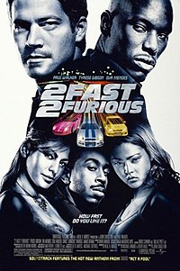
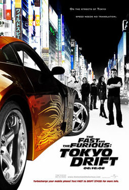

O filme conta a história de Brian O'Conner, um policial novato que se infiltra no mundo das corridas ilegais de carros modificados nas ruas de Los Angeles para capturar o responsável por diversos roubos a caminhões nas estradas próximas à cidade. Mas ele acabou se envolvendo de tal modo que acabou por não prender os corredores e logo apaixonando-se por Mia Toretto, irmã de um deles, Dominic Toretto, que é o mais famoso e respeitado das ruas, e que namora a bela Letty, que além de ser namorada de Dom, também é aliada nos crimes que ele comete.
Lançamento: 28 de setembro de 2001 (Brasil)
Diretor: Rob Cohen
Séries de filmes: Velozes e Furiosos
Orçamento: 38 milhões USD
Bilheteria: 207,3 milhões USD
Música composta por: Brian Tyler, Brian Transeau
Autores: Gary Scott Thompson, Ken Li

2 Fast 2 Furious
O ex-policial Brian O'Conner se muda de Los Angeles para Miami para recomeçar sua vida. Ele acaba se envolvendo em rachas na sua nova cidade com seu amigo Tej e Suki. Suas aventuras terminam quando ele é preso e faz um acordo com agentes do FBI. Brian tem a missão muito perigosa de prender um poderoso chefe do cartel das drogas.
Lançamento: 12 de junho de 2003 (Brasil)
Diretor: John Singleton
Séries de filmes: Velozes e Furiosos
Orçamento: 76 milhões USD
Bilheteria: 236,4 milhões USD
Música composta por: David Arnold
Autores: Gary Scott Thompson, Derek Haas, Michael Brandt

The Fast and the Furious: Tokyo DriftFast & Furious
The Fast and the Furious - Tokyo Drift:
Sean Boswell é um piloto de rua que desafia seu rival e bate o carro no fim da corrida. Então, Sean decide se mudar para o Japão em companhia de seu pai para evitar a prisão nos Estados Unidos, já que os rachas não são nada populares com as autoridades. Em Tóquio, ele começa a aprender um excitante e perigoso estilo novo de competir nas ruas. Só que os riscos ficam ainda mais altos quando Sean decide competir com o campeão local e acaba se apaixonando pela namorada dele.
Fast & Furious:
Na República Dominicana, Dominic Toretto, junto da sua namorada Letty, continuam na criminalidade junto a sua gangue, praticando diversos atos ilícitos. Mas com o FBI na cola de Dom, ele decide fugir, a fim de proteger sua equipe e sua namorada. Mas após um assassinato ocorrer, supostamente tirando a vida da sua namorada Letty, Dominic volta disposto em busca de vingança, cruzando novamente o caminho do policial Brian O'Conner.